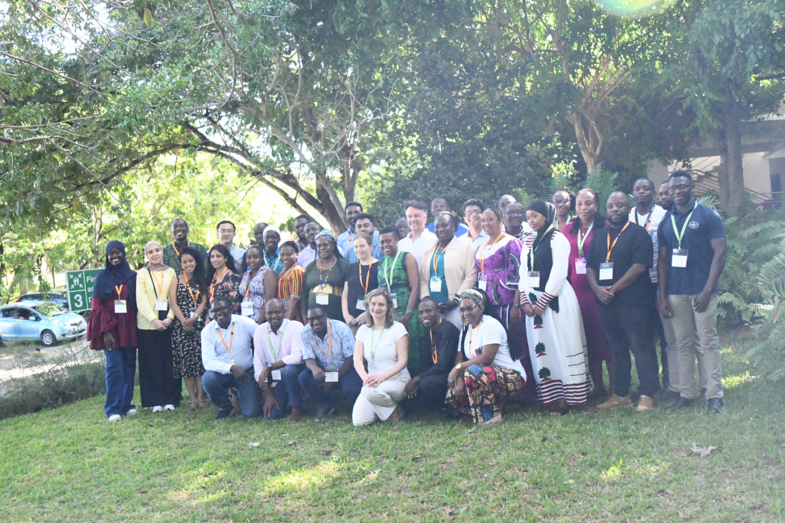

Human Gut Microbiome Metagenomics – Africa
Bioinformatics resources for human gut microbiome metagenomics

Researchers developing expertise in microbiome metagenomics.
Participants applying sequencing and bioinformatics to relevant research questions.
Scientists strengthening study design, analysis, interpretation and communication skills.
Connect microbiome metagenomics and bioinformatics to early-life health, immunity, nutrition, and infection resistance.
Use practical workflows to generate, analyse, and interpret microbiome metagenomics datasets.
Integrate equitable, context-specific considerations into microbiome research practice.
Assess limitations, report findings clearly, and strengthen grant-writing and public engagement skills.
Hands-on bioinformatics modules
Quality assessment, preprocessing and preparation of clean metagenomic datasets.
Metagenome assembly, binning, quality assessment and genome-centred analysis.
Building and using tailored databases for microbiome analysis.
Read-based and assembly-based approaches for identifying microbial communities.
Functional profiling from shotgun metagenomic data and interpretation of pathways.
Antimicrobial resistance and resistance gene identification in metagenomic datasets.
Building and interpreting trees to explore evolutionary relationships.
Photo Gallery Areas
Instructors and Wellcome Connecting Science team
- Trevor Lawley, Wellcome Sanger Institute, UK
- Yan Shao, Wellcome Sanger Institute, UK
- Caroline Tigoi, KEMRI-Wellcome Trust Research Programme, Kenya
- James Njunge, KEMRI-Wellcome Trust Research Programme, Kenya
- Bonface Gichuki, Wellcome Sanger Institute, UK
- Kelvin Sibuta, Wellcome Sanger Institute, UK
- Jay Berkeley, KEMRI-Wellcome Trust Research Programme, Kenya
- Anne Amulele (Vuruku), KEMRI-Wellcome Trust Research Programme, Kenya
- Jolynne Mokaya, Wellcome Sanger Institute, UK
- Luicer Olubayo, University of Witwatersrand
- Rahma Golicha, Wellcome Sanger Institute and KEMRI-Wellcome Trust Research Programme
- Syed Jayedul Bashar, icddr,b, Bangladesh
- Julius Mulindwa, Makerere University, Uganda
- Alice Matimba, Head of Training and Global Capacity
- Monica Abrudan, Bioinformatics Education Developer
- Isabela Malta, Assistant Overseas Courses Manager
- Scarlett Storr, Events Organiser
Open, citable training resources
Course data are free to reuse and adapt with appropriate attribution under the Attribution-NonCommercial-ShareAlike 4.0 International licence.
Resources can be adapted for future training with acknowledgement.
Course landing pages are assigned DOIs through Zenodo, providing a professional record for course contributions.